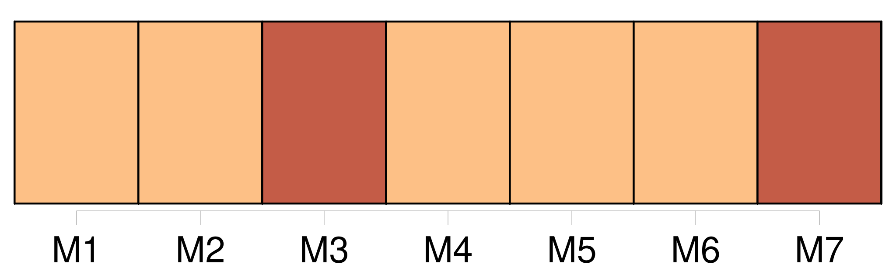

Longueur nb maillons : 895 mentions |
 |
Raymond Radiguet Mais qu'y puis [-je] ?? Est -ce [ma] faute si [j'] eus douze ans quelques mois avant la déclaration de la guerre?? Sans doute, les troubles qui me vinrent de cette période extraordinaire furent d'une sorte qu'on n'éprouve jamais à cet âge ; mais comme il n'existe rien d'assez fort pour nous vieillir malgré les apparences, c'est en enfant que [je] devais me conduire dans une aventure où déjà un homme eût éprouvé de l'embarras. [Je] ne suis pas le seul. Et [mes] camarades garderont de cette époque un souvenir qui n'est pas celui de leurs aînés.
Que ceux déjà qui [m'] en veulent se représentent ce que fut la guerre pour tant de très jeunes garçons : quatre ans de grandes vacances. [2 phrases] [Mes] parents condamnaient plutôt la camaraderie mixte. [1 phrases] [Je] n'ai jamais été un rêveur. Ce qui semble rêve aux autres, plus crédules, [me] paraissait à [moi] aussi réel que le fromage au chat, malgré la cloche de verre. [2 phrases] Jusqu'à douze ans, [je] ne me vois aucune amourette, sauf pour une petite fille, nommée Carmen, à qui [je] fis tenir, par un gamin plus jeune que [moi] , une lettre dans laquelle [je] lui exprimais mon amour. [Je] m'autorisai de cet amour pour solliciter un rendez -vous. [Ma] lettre lui avait été remise le matin avant qu'elle se rendît en classe. [J'] avais distingué la seule fillette qui [me] ressemblât, parce qu'elle était propre, et allait à l'école accompagnée d'une petite, comme [moi] de [mon] petit frère. Afin que ces deux témoins se tussent, [j'] imaginai de les marier, en quelque sorte. À [ma] lettre, [j'] en joignis donc une de la part de [mon] frère, qui ne savait pas écrire, pour Mlle Fauvette. [J'] expliquai à [mon] frère [mon] entremise, et notre chance de tomber juste sur deux sœurs de nos âges et douées de noms de baptêmes aussi exceptionnels.
[J'] eus la tristesse de voir que [je] ne m'étais pas mépris sur le bon genre de Carmen, lorsque, après avoir déjeuné avec [mes] parents qui [me] gâtaient et ne [me] grondaient jamais, [je] rentrai en classe. À peine [mes] camarades à leurs pupitres ― [moi] en haut de la classe, accroupi pour prendre dans un placard, en [ma] qualité de premier, les volumes de la lecture à haute voix ―, le directeur entra. [2 phrases] [Mes] jambes fléchirent, les volumes tombèrent, et [je] les ramassai, tandis que le directeur s'entretenait avec le maître. Déjà, les élèves des premiers bancs se tournaient vers [moi] , écarlate, au fond de la classe, car ils entendaient chuchoter [mon] nom. Enfin, le directeur [m'] appela, et pour [me] punir finement, tout en n'éveillant, croyait -il, aucune mauvaise idée chez les élèves, [me] félicita d'avoir écrit une lettre de douze lignes sans aucune faute. Il [me] demanda si [je] l'avais bien écrite seul, puis il [me] pria de le suivre dans son bureau. [1 phrases] Il [me] morigéna dans la cour, sous l'averse. Ce qui troubla fort [mes] notions de morale, fut qu'il considérait comme aussi grave d'avoir compromis la jeune fille ( dont les parents lui avaient communiqué [ma] déclaration ), que d'avoir dérobé une feuille de papier à lettres. Il [me] menaça d'envoyer cette feuille chez [moi] [Je] le suppliai de n'en rien faire.
Il céda, mais [me] dit qu'il conservait la lettre, et qu'à la première récidive il ne pourrait plus cacher [ma] mauvaise conduite. [Je] rentrai en classe. Le professeur, ironique, [m'] appela Don Juan. [J'] en fus extrêmement flatté, surtout de ce qu'il [me] citât le nom d'une œuvre que [je] connaissais et que ne connaissaient pas [mes] camarades. Son « Bonjour, Don Juan » et [mon] sourire entendu transformèrent la classe à [mon] égard. Peut-être avait -elle déjà su que [j'] avais chargé un enfant des petites classes de porter une lettre à une « fille », comme disent les écoliers dans leur dur langage.
Cet enfant s'appelait Messager ; [je] ne l'avais pas élu d'après son nom, mais, quand même, ce nom [m'] avait inspiré confiance. À une heure, [j'] avais supplié le directeur de ne rien dire à [mon] père ; à quatre, [je] brûlais de lui raconter tout. Rien ne [m'] y obligeait. [Je] mettrais cet aveu sur le compte de la franchise.
Sachant que mon père ne se fâcherait pas, [j'] étais, somme toute, ravi qu'il connût [ma] prouesse. [J'] avouai donc, ajoutant avec orgueil que le directeur [m'] avait promis une discrétion absolue ( comme à une grande personne ). Mon père voulait savoir si [je] n'avais pas forgé de toutes pièces ce roman d'amour. [3 phrases] dit alors le directeur surpris et très ennuyé ; [il] vous a raconté cela??
[Il] m'avait supplié de me taire, disant que vous [le] tueriez. Ce mensonge du directeur l'excusait ; il contribua encore à [mon] ivresse d'homme. [J'] y gagnai séance tenante l'estime de [mes] camarades et des clignements d'yeux du maître. [1 phrases] Le malheureux ignorait ce que [je] savais déjà : [mon] père, choqué par sa conduite, avait décidé de [me] laisser finir [mon] année scolaire, et de [me] reprendre. [1 phrases] [Ma] mère ne voulant pas que cela influât sur [mes] prix, [mes] couronnes, se réservait de dire la chose, après la distribution. Ce jour venu, grâce à une injustice du directeur qui craignait confusément les suites de son mensonge, [seul de la classe] , [je] reçus la couronne d'or que méritait aussi le prix d'excellence. [2 phrases] [Ma] mère [me] jugeait trop jeune pour aller à Henri Iv. [1 phrases]
[Je] restai deux ans à la maison et [travaillai] seul. [Je] me promettais des joies sans bornes, car, réussissant à faire en quatre heures le travail que ne fournissaient pas en deux jours mes anciens condisciples, [j'] étais libre plus de la moitié du jour. [Je] me promenais seul au bord de la Marne qui était tellement notre rivière que [mes] sœurs disaient, en parlant de la Seine, « une Marne ». [J'] allais même dans le bateau de [mon] père, malgré sa défense ; mais [je] ne ramais pas, et sans m'avouer que [ma] peur n'était pas celle de lui désobéir, mais la peur tout court. [Je] lisais, couché dans ce bateau. [2 phrases]
Aussi, bien plus tard, à l'âge où l'adolescent méprise les livres de la Bibliothèque rose, [je] pris goût à leur charme enfantin, alors qu'à cette époque [je] ne les aurais voulu lire pour rien au monde. Le désavantage de ces récréations alternant avec le travail était de transformer pour [moi] toute l'année en fausses vacances.
Ainsi, [mon] travail de chaque jour était -il peu de chose, mais, comme, travaillant moins de temps que les autres, [je] travaillais en plus pendant leurs vacances, ce peu de chose était le bouchon de liège qu'un chat garde toute sa vie au bout de la queue, alors qu'il préférerait sans doute un mois de casserole. Les vraies vacances approchaient, et [je] m'en occupais fort peu puisque c'était pour [moi] le même régime. [11 phrases] Tout cet ensemble [me] laisse un souvenir de feu d'artifice. [3 phrases] [Mes] frères et [mes] sœurs commençaient d'en vouloir à la guerre, ils la trouvaient longue. [4 phrases] Au lieu de quitter la table où les grandes personnes s'attardent, ils y restent pour entendre [mon] père parler de départ. [2 phrases] [Mes] frères plaisantent [ma] petite sœur. [1 phrases] » [Ma] sœur sanglote. [4 phrases] Tandis que chacun s'étonne, [je] découvre enfin les mobiles de ce patriotisme : un voyage à bicyclette!! [9 phrases]
Voici comment : [6 phrases]
En revenant de l'école, et en y allant, [mes] frères tiraient sa sonnette, avec d'autant plus d'audace que le chien, qui pouvait avoir [mon] âge, n'était pas à craindre. La veille du 14 juillet 1914, en allant à la rencontre de [mes] frères, quelle ne fut pas ma surprise de voir un attroupement devant la grille des Maréchaud. [5 phrases] [J'] eusse voulu pouvoir rester là toujours, mais notre bonne, envoyée par [ma] mère, vint nous rappeler au travail. Sans cela, [je] serais privé de fête.
[Je] partis la mort dans l'âme, et priant Dieu que la bonne fût encore sur le toit, lorsque [j'] irais chercher [mon] père à la gare. [1 phrases]
[Ils] ne lui accordaient qu'une minute distraite. [23 phrases] La folle disait des choses que [j'] ai oubliées, avec cette profonde mélancolie résignée que donne aux voix la certitude qu'on a raison, que tout le monde se trompe. [8 phrases]
[Je] pensai à quelque fille, capitaine corsaire, restant seule sur son bateau qui sombre. [1 phrases] [J'] avais voulu rester avec [mon] père, tandis que [ma] mère, pour assouvir ce besoin de mal au cœur qu'ont les enfants, conduisait les siens au manège en montagnes russes. Certes, [j'] éprouvais cet étrange besoin plus vivement que [mes] frères. [J'] aimais que [mon] cœur batte plus vite et irrégulièrement. Ce spectacle, d'une poésie profonde, [me] satisfaisait davantage. « Comme [tu] es pâle », avait dit [ma] mère. [Je] trouvai le prétexte des feux de Bengale.
Ils [me] donnaient, dis [-je] , une couleur verte.
— Je crains tout de même que cela [l'] impressionne trop, dit -elle à [mon] père. [1 phrases]
[Il] peut regarder n'importe quoi, sauf un lapin qu'on écorche. [Mon] père disait cela pour que [je] restasse. Mais il savait que ce spectacle [me] bouleversait. [Je] sentais qu'il le bouleversait aussi. [Je] lui demandai de [me] prendre sur ses épaules pour mieux voir.
En réalité, [j'] allais m'évanouir, [mes] jambes ne [me] portaient plus. [5 phrases] Jusqu'ici [j'] avais essayé de supporter tout, bien que [mes] oreilles tintassent et que le cœur [me] manquât.
Mais quand [j'] entendis des gens crier : « Elle vit encore », [je] tombai, sans connaissance, des épaules de mon père. Revenu à [moi] , il [m'] entraîna au bord de la Marne. [1 phrases] Au retour, [je] crus voir derrière la grille une silhouette blanche, le fantôme de la bonne!! [1 phrases]
Si [j'] insiste sur un tel épisode, c'est qu'il fait comprendre mieux que tout autre l'étrange période de la guerre, et combien, plus que le pittoresque, [me] frappait la poésie des choses. [3 phrases]
Tandis que [ma] tante parlait d'une amie, enfuie dès les premiers jours, après avoir enterré dans son jardin des pendules, des boîtes de sardines, [je] demandai à [mon] père le moyen d'emporter nos vieux livres ; c'est ce qu'il [me] coûtait le plus de perdre. [1 phrases] [Mes] sœurs, maintenant, allaient à J …… [4 phrases] [Je] devais entrer au lycée Henri Iv ; mais [mon] père préféra [me] garder encore un an à la campagne. [Ma] seule distraction de ce morne hiver fut de courir chez notre marchande de journaux, pour être sûr d'avoir un exemplaire du Mot, journal qui [me] plaisait et paraissait le samedi.
Ce jour -là, [je] n'étais jamais levé tard. Mais le printemps arriva, qu'égayèrent [mes] premières incartades. Sous prétexte de quêtes, ce printemps, plusieurs fois, [je] me promenai, endimanché, une jeune personne à [ma] droite. [Je] tenais le tronc ; elle, la corbeille d'insignes. Dès la seconde quête, des confrères [m'] apprirent à profiter de ces journées libres où l'on [me] jetait dans les bras d'une petite fille. [1 phrases] Pour la première fois, [j'] eus un ami. [J'] aimais à quêter avec sa sœur. Pour la première fois, [je] m'entendais avec un garçon aussi précoce que [moi] , admirant même sa beauté, son effronterie. [4 phrases] René allait au lycée Henri Iv, et [je] serais dans sa classe, en troisième. Il ne devait pas apprendre le grec ; il [me] fit cet extrême sacrifice de convaincre ses parents de le lui laisser apprendre. [3 phrases]
Ils y virent l'effet de [ma] bonne influence, et, s'ils supportaient ses autres camarades, [j'] étais, du moins, le seul ami qu'ils approuvassent. Pour la première fois, nul jour des vacances de cette année ne [me] fut pesant. [Je] connus donc que personne n'échappe à son âge, et que [mon] dangereux mépris s'était fondu comme glace dès que quelqu'un avait bien voulu prendre garde à [moi] , de la façon qui [me] convenait. [1 phrases]
Le jour de la rentrée des classes, René [me] fut un guide précieux.
Avec lui tout [me] devenait plaisir, et [moi] [qui] , seul, ne pouvais avancer d'un pas, [j'] aimais faire à pied, deux fois par jour, le trajet qui sépare Henri Iv de la gare de la Bastille, où nous prenions notre train.
Trois ans passèrent ainsi, sans autre amitié et sans autre espoir que les polissonneries du jeudi – avec les petites filles que les parents de [mon] ami nous fournissaient innocemment, invitant ensemble à goûter les amis de leur fils et les amies de leur fille –, menues faveurs que nous dérobions, et qu'elles nous dérobaient, sous prétexte de jeux à gages. La belle saison venue, [mon] père aimait à nous emmener, [mes] frères et [moi] , dans de longues promenades. Un de nos buts favoris était Ormesson, et de suivre le Morbras, rivière large d'un mètre, traversant des prairies où poussent des fleurs qu'on ne rencontre nulle part ailleurs, et dont [j'] ai oublié le nom. [4 phrases] [Mon] père [me] dit que nous retrouverions à La Varenne des gens agréables, les Grangier. [Je] les connaissais pour avoir vu le nom de leur fille, Marthe, dans le catalogue d'une exposition de peinture. Un jour, [j'] avais entendu [mes] parents parler de la visite d'un M. Grangier. [2 phrases] Son père aurait voulu lui faire une surprise : que ses aquarelles figurassent dans une exposition de charité dont [ma] mère était présidente. [3 phrases]
Mais Mme Grangier paraissait l'aînée de son mari ; son inélégance, sa taille courte, firent qu'elle [me] déplut au premier coup d'œil. Au cours de cette promenade, [je] devais remarquer qu'elle fronçait souvent les sourcils, ce qui couvrait son front de rides auxquelles il fallait une minute pour disparaître. Afin qu'elle eût tous les motifs de [me] déplaire, sans que [je] me reprochasse d'être injuste, [je] souhaitais qu'elle employât des façons de parler assez communes.
Sur ce point, elle [me] déçut. [2 phrases] [Je] tremblais à la perspective d'une promenade sans autre compagnie que celle de ses parents. [4 phrases]
Cette imprudente [me] charma. [3 phrases] Sur la route, Marthe et [moi] marchions en tête.
[Mon] père marchait derrière, entre les Grangier.
[Mes] frères, eux, bâillaient avec ce nouveau petit camarade chétif, à qui l'on défendait de courir. Comme [je] complimentais Marthe sur ses aquarelles, elle [me] répondit modestement que c'étaient des études. [1 phrases] Elle [me] montrerait mieux, des fleurs « stylisées ».
[Je] jugeai bon, pour la première fois, de ne pas lui dire que [je] trouvais ces sortes de fleurs ridicules. Sous son chapeau, elle ne pouvait bien [me] voir.
[Moi] , [je] l'observais. — Vous ressemblez peu à madame votre mère, lui dis [-je] [1 phrases]
— On me le dit quelquefois ; mais, quand [vous] viendrez à la maison, je [vous] montrerai des photographies de maman lorsqu'elle était jeune, je lui ressemble beaucoup.
[Je] fus attristé de cette réponse, et [je] priai Dieu de ne point voir Marthe quand elle aurait l'âge de sa mère.
Voulant dissiper le malaise de cette réponse pénible, et ne comprenant pas que, pénible, elle ne pouvait l'être que pour [moi] , puisque heureusement Marthe ne voyait point sa mère avec [mes] yeux, [je] lui dis : [Je] restai terrifié, n'ayant jamais dit pareille chose à une femme.
[Je] pensais à la façon dont [j'] étais coiffé, [moi] — [Vous] pourrez le demander à maman ( comme si elle avait besoin de se justifier!! [2 phrases] « Quelle fille était -ce donc, pensais [-je] , pour admettre qu'un gamin la querelle à propos de ses mèches??
» [J'] y discernais une révolte. [4 phrases] Désagréablement surpris d'apprendre qu'elle était fiancée, [je] me réjouis de savoir qu'elle désobéissait à un soldat assez nigaud pour craindre Baudelaire. [Je] fus heureux de sentir qu'il devait souvent choquer Marthe. Après la première surprise désagréable, [je] me félicitai de son étroitesse, d'autant mieux que [j'] eusse craint, s'il avait lui aussi goûté Les Fleurs du mal, que leur futur appartement ressemblât à celui de La Mort des amants.
[Je] me demandai ensuite ce que cela pouvait bien [me] faire. [1 phrases] [Moi] [qui] n'y allais jamais, [je] lui proposai de l'y conduire, ajoutant que [j'] y travaillais souvent. Mais, craignant ensuite que [mon] mensonge fût découvert, [je] la priai de n'en point parler à [mon] père. Il ignorait, dis [-je] , que [je] manquais des cours de gymnastique pour me rendre à la Grande-Chaumière. Car [je] ne voulais pas qu'elle pût se figurer que [je] cachais l'académie à [mes] parents, parce qu'ils [me] défendaient de voir des femmes nues.
[J'] étais heureux qu'il se fit un secret entre nous, et [moi] , timide, me sentais déjà tyrannique avec elle. [J'] étais fier aussi d'être préféré à la campagne, car nous n'avions pas encore fait allusion au décor de notre promenade. [3 phrases] Dans [ma] candeur, [je] regrettais d'avoir été si loin, et d'avoir tellement précipité les choses. « Après une conversation moins sentimentale, plus naturelle, pensai [-je] , [je] pourrais éblouir Marthe, et m'attirer la bienveillance de ses parents, en racontant le passé de ce village. » [Je] m'en abstins. [Je] croyais avoir des raisons profondes, et [pensais] qu'après tout ce qui s'était passé, une conversation tellement en dehors de nos inquiétudes communes ne pourrait que rompre le charme. [Je] croyais qu'il s'était passé des choses graves. C'était d'ailleurs vrai, simplement, [je] le sus dans la suite, parce que Marthe avait faussé notre conversation dans le même sens que [moi] Mais [moi] [qui] ne pouvais m'en rendre compte, [je] me figurais lui avoir adressé des paroles significatives. [Je] croyais avoir déclaré [mon] amour à une personne insensible.
[J'] oubliais que M. et Mme Grangier eussent pu entendre sans le moindre inconvénient tout ce que [j'] avais dit à leur fille ; mais, [moi] , aurais [-je] pu le lui dire en leur présence? — Marthe ne [m'] intimide pas, me répétais [-je]
Donc, seuls, ses parents et [mon] père [m'] empêchent de me pencher sur son cou et de l'embrasser. Profondément en [moi] , un autre garçon se félicitait de ces trouble-fête.
Celui -ci pensait :
Car [je] n'oserais pas davantage l'embrasser, et n' [aurais] aucune excuse. [3 phrases] [Je] dus subir les compliments de Mme Grangier. Ils [m'] humiliaient. Ils rappelaient à sa fille que [je] n'étais encore qu'un lycéen, qui passerait son baccalauréat dans un an. Marthe voulut boire de la grenadine ; [j'] en commandai aussi. Le matin encore, [je] me serais cru déshonoré en buvant de la grenadine. [Mon] père n'y comprenait rien. Il [me] laissait toujours servir des apéritifs. [Je] tremblai qu'il [me] plaisantât sur [ma] sagesse.
Il le fit, mais à mots couverts, de façon que Marthe ne devinât pas que [je] buvais de la grenadine pour faire comme elle. [2 phrases]
[Je] promis à Marthe de lui porter, le jeudi suivant, la collection du journal Le Mot et Une saison en enfer. [4 phrases] [Mon] père et [mes] frères s'étaient ennuyés, qu'importe!! [1 phrases] Le lendemain, au lycée, [je] n'éprouvai pas le besoin de raconter à René, à qui [je] disais tout, [ma] journée du dimanche. Mais [je] n'étais pas d'humeur à supporter qu'il [me] raillât de n'avoir pas embrassé Marthe en cachette.
Autre chose [m'] étonnait ; c'est qu'aujourd'hui [je] trouvai René moins différent de [mes] camarades.
Ressentant de l'amour pour Marthe, [j'] en ôtais à René, à [mes] parents, à [mes] sœurs. [Je] me promettais bien cet effort de volonté de ne pas venir la voir avant le jour de notre rendez -vous. Pourtant, le mardi soir, ne pouvant attendre, [je] sus trouver à [ma] faiblesse de bonnes excuses qui [me] permissent de porter après le dîner le livre et les journaux.
Dans cette impatience, Marthe verrait la preuve de [mon] amour, disais [-je] , et si elle refuse de la voir, [je] saurais bien l'y contraindre. Pendant un quart d'heure, [je] courus comme un fou jusqu'à sa maison. Alors, craignant de la déranger pendant son repas, [j'] attendis, en nage, dix minutes, devant la grille. [Je] pensais que pendant ce temps [mes] palpitations de cœur s'arrêteraient. [1 phrases] [Je] manquai tourner bride, mais depuis quelques minutes, d'une fenêtre voisine, une femme [me] regardait curieusement, voulant savoir ce que [je] faisais, réfugié contre cette porte. Elle [me] décida. [Je] sonnai. [J'] entrai dans la maison. [Je] demandai à la domestique si Madame était chez elle.
Presque aussitôt, Mme Grangier parut dans la petite pièce où l'on [m'] avait introduit. [Je] sursautai, comme si la domestique eût dû comprendre que [j'] avais demandé « Madame » par convenance et que [je] voulais voir « Mademoiselle ».
Rougissant, [je] priai Mme Grangier de [m'] excuser de la déranger à pareille heure, comme s'il eût été une heure du matin : ne pouvant venir jeudi, [j'] apportais le livre et les journaux à sa fille. — Cela tombe à merveille, [me] dit Mme Grangier, car Marthe n'aurait pu [vous] recevoir. [2 phrases]
[Je] m'en allai donc, et puisque [je] n'avais plus de chance de la revoir jamais, croyais [-je] , m'efforçais de ne plus penser à Marthe, et, par cela même, ne pensant qu'à elle. Pourtant, un mois après, un matin, sautant de [mon] wagon à la gare de la Bastille, [je] la vis qui descendait d'un autre. [1 phrases]
[Je] lui demandai de [m'] accompagner jusqu'à Henri Iv. [1 phrases]
Vexé qu'elle [me] parlât études, comme si aucune autre conversation n'eût été de [mon] âge, [je] lui répondis aigrement que ce serait assez drôle. [1 phrases]
[Je] pensai à sa mère. Nous arrivions à Henri Iv, et, ne voulant pas la quitter sur ces paroles que [je] croyais blessantes, [je] décidai d'entrer en classe une heure plus tard, après le cours de dessin. [Je] fus heureux qu'en cette circonstance Marthe ne montrât pas de sagesse, ne [me] fit aucun reproche, et, plutôt, semblât [me] remercier d'un tel sacrifice, en réalité nul.
[Je] lui fus reconnaissant qu'en échange elle ne [me] proposât point de l'accompagner dans ses courses, mais qu'elle [me] donnât son temps comme [je] lui donnais le mien. [1 phrases] [Je] renonçai au lycée.
[J'] avais dans [ma] poche, par miracle, plus d'argent que n'en a d'habitude un collégien en deux ans, ayant la veille vendu [mes] timbres-poste les plus rares à la Bourse aux timbres, qui se tient derrière le Guignol des Champs-Élysées. Au cours de la conversation, Marthe [m'] ayant appris qu'elle déjeunait chez ses beaux-parents, [je] décidai de la résoudre à rester avec [moi] [2 phrases]
Mais, voyant que [je] restais sur [ma] chaise de fer, elle n'eut pas le courage de [me] rappeler que [j'] aurais dû être assis sur les bancs de Henri Iv. [5 phrases]
[J'] en augurai mal pour notre entente.
— Ces chaises sont trop dures, [me] dit -elle, comme pour s'excuser d'être debout. [1 phrases]
[Je] ne pus m'empêcher d'imaginer les dessins que le cannage imprime sur la peau.
— Allons, accompagnez -moi dans les magasins, puisque [vous] êtes décidé à ne pas aller en classe, dit Marthe, faisant pour la première fois allusion à ce que [je] négligeais pour elle.
[Je] l'accompagnai dans plusieurs maisons de lingerie, l'empêchant de commander ce qui lui plaisait et ne [me] plaisait pas ; par exemple, évitant le rose, qui [m'] importune, et qui était sa couleur favorite. [1 phrases] Ne pensant pas qu'elle pouvait leur mentir pour le simple plaisir de rester en [ma] compagnie, [je] cherchai ce qui la déterminerait à [me] suivre dans l'école buissonnière. [3 phrases] [Je] tenais [mon] prétexte. À son refus, empreint d'une véritable déception, [je] pensai qu'elle viendrait. Au bout d'une demi-heure, ayant usé de tout pour la convaincre, et n'insistant même plus, [je] l'accompagnai chez ses beaux-parents, dans l'état d'esprit d'un condamné à mort espérant jusqu'au dernier moment qu'un coup de main se fera sur la route du supplice. [Je] voyais s'approcher la rue, sans que rien ne se produisît. [1 phrases]
Elle [me] dit : [1 phrases] Au bout de quelques minutes, n'en pouvant plus d'impatience, [j'] avisai une marchande de fleurs et [je] choisis une à une des roses rouges, dont [je] fis faire une botte. [Je] ne pensais pas tant au plaisir de Marthe qu'à la nécessité pour elle de mentir encore ce soir pour expliquer à ses parents d'où venaient les roses. Notre projet, lors de la première rencontre, d'aller à une académie de dessin ; le mensonge du téléphone qu'elle répéterait, ce soir, à ses parents, mensonge auquel s'ajouterait celui des roses, [m'] étaient des faveurs plus douces qu'un baiser. Car, ayant souvent embrassé, sans grand plaisir, des lèvres de petites filles, et oubliant que c'était parce que [je] ne les aimais pas, [je] désirais peu les lèvres de Marthe.
Tandis qu'une telle complicité [m'] était restée, jusqu'à ce jour, inconnue. [1 phrases]
[Je] donnai au chauffeur l'adresse d'un bar de la rue Daunou. [1 phrases] Elle respirait de temps en temps les roses rouges dont elle se promettait de faire une aquarelle, qu'elle [me] donnerait en souvenir de cette journée. [Je] lui demandai de [me] montrer une photographie de son fiancé. [Je] le trouvai beau. Sentant déjà quelle importance elle attachait à [mes] opinions, [je] poussai l'hypocrisie jusqu'à lui dire qu'il était très beau, mais d'un air peu convaincu, pour lui donner à penser que [je] le lui disais par politesse.
Ce qui, selon [moi] , devait jeter le trouble dans l'âme de Marthe, et, de plus, [m'] attirer sa reconnaissance. [5 phrases]
Bien que [je] me fusse promis de ne montrer d'extrême plaisir ou déplaisir à aucune des paroles de Marthe, il [me] fallut faire un effort pour continuer de marcher sur le boulevard d'un pas tranquille qui maintenant ne s'accordait plus avec le rythme de [mon] cœur. Cette obligation d'accompagner Marthe [m'] apparut comme une malchance. [1 phrases]
Puis, [j'] entrevis le moyen de choisir une chambre pour Marthe et pour [moi]
[J'] oubliais si vite son fiancé, qu'au bout d'un quart d'heure de marche, on [m'] aurait surpris en [me] rappelant que, dans cette chambre, un autre dormirait auprès d'elle. [2 phrases] Il [me] fallut donc les combattre tous deux. [1 phrases]
Au moindre mot de Marthe, devinant ce qui la tentait, il [me] fallait lui désigner le contraire, qui ne [me] plaisait pas toujours, afin de [me] donner l'apparence de céder à ses caprices, quand [j'] abandonnerais un meuble pour un autre, qui dérangeait moins son œil. [1 phrases] » N'osant même plus [m'] avouer ses propres goûts, elle les attribuait à son fiancé.
[Je] devinai que dans quelques jours nous les raillerions ensemble. Pourtant [je] ne comprenais pas bien cette faiblesse. « Si elle ne [m'] aime pas, pensai [-je] , quelle raison a-t -elle de [me] céder, de sacrifier ses préférences, et celles de ce jeune homme, aux miennes?? » [Je] n'en trouvai aucune. La plus modeste eût été encore de [me] dire que Marthe [m'] aimait.
Pourtant [j'] étais sûr du contraire. Marthe [m'] avait dit : « Au moins laissons -lui l'étoffe rose. [1 phrases] » Rien que pour ce mot, [je] me sentais près de lâcher prise. [1 phrases]
[Je] représentai à Marthe combien ces murs roses gâcheraient les meubles simples que « nous avions choisis », et, reculant encore devant le scandale, lui conseillai de faire peindre les murs de sa chambre à la chaux! [2 phrases] Elle se contenta de [me] dire : « En effet, [vous] avez raison.
» [J'] étais parvenu à transformer, meuble à meuble, ce mariage d'amour, ou plutôt d'amourette, en un mariage de raison, et lequel!! [1 phrases] En [me] quittant, ce soir -là, au lieu d'éviter désormais [mes] conseils, elle [m'] avait prié de l'aider les jours suivants dans le choix de ses autres meubles.
[Je] le lui promis, mais à condition qu'elle [me] jurât de ne jamais le dire à son fiancé, puisque la seule raison qui pût à la longue lui faire admettre ces meubles, s'il avait de l'amour pour Marthe, c'était de penser que tout sortait d'elle, de son bon plaisir, qui deviendrait le leur. Quand [je] rentrai à la maison, [je] crus lire dans le regard de [mon] père qu'il avait déjà appris [mon] escapade. [3 phrases] En [me] couchant, [je] me répétai que, si elle songeait à son mariage avant de dormir, elle devait, ce soir, l'envisager de tout autre sorte qu'elle ne l'avait fait les jours précédents.
Pour [moi] , quelle que fût l'issue de cette idylle, [j'] étais, d'avance, bien vengé de son Jacques : [je] pensais à la nuit de noces dans cette chambre austère, dans « [ma] » chambre! Le lendemain matin, [je] guettai dans la rue le facteur qui devait apporter une lettre d'absence. Il [me] la remit, [je] l'empochai, jetant les autres dans la boîte de notre grille. [1 phrases] Manquer la classe voulait dire, selon [moi] , que [j'] étais amoureux de Marthe. [Je] me trompais. Marthe ne [m'] était que le prétexte de cette école buissonnière. Et la preuve, c'est qu'après avoir goûté en compagnie de Marthe aux charmes de la liberté, [je] voulus y goûter seul, puis faire des adeptes.
La liberté [me] devint vite une drogue.
L'année scolaire touchait à sa fin, et [je] voyais avec terreur que [ma] paresse allait rester impunie, alors que [je] souhaitais le renvoi du collège, un drame, enfin, qui clôturât cette période. [1 phrases] Certes, [je] ne cherchais pas à faire de la peine à [mon] père ; pourtant, [je] souhaitais la chose qui pourrait lui en faire le plus. Les classes [m'] avaient toujours été un supplice ; Marthe et la liberté avaient achevé de [me] les rendre intolérables. [Je] me rendais bien compte que, si [j'] aimais moins René, c'était simplement parce qu'il [me] rappelait quelque chose du collège.
[Je] souffrais, et cette crainte [me] rendait même physiquement malade, à l'idée de me retrouver, l'année suivante, dans la niaiserie de [mes] condisciples. Pour le malheur de René, [je] lui avais trop bien fait partager [mon] vice. Aussi, lorsque, moins habile que [moi] , il [m'] annonça qu'il était renvoyé de Henri Iv, [je] crus l'être [moi -même]
Il fallait l'apprendre à [mon] père, car il [me] saurait gré de le lui dire [moi -même] , avant la lettre du censeur, lettre trop grave à subtiliser. [1 phrases] Le lendemain, jour de congé, [j'] attendis que [mon] père fût à Paris pour prévenir [ma] mère. [1 phrases] Puis, [je] partis au bord de la Marne, où Marthe [m'] avait dit qu'elle [me] rejoindrait peut-être. [2 phrases] Mon, amour puisant dans cette rencontre une mauvaise énergie, [j'] aurais pu, ensuite, lutter contre [mon] père ; tandis que l'orage éclatant après une journée de vide, de tristesse, [je] rentrai le front bas, comme il convenait. [Je] revins chez nous un peu après l'heure où [je] savais que [mon] père avait coutume d'y être. [1 phrases] [Je] me promenai dans le jardin, attendant que [mon] père [me] fît venir. [Mes] sœurs jouaient en silence. [1 phrases]
Un de [mes] frères, assez excité par l'orage, [me] dit de me rendre dans la chambre où [mon] père s'était étendu. Des éclats de voix, des menaces, [m'] eussent permis la révolte. [1 phrases]
[Mon] père se taisait ; ensuite, sans aucune colère, avec une voix même plus douce que de coutume, il [me] dit : Les larmes qui ne pouvaient s'enfuir par [mes] yeux, comme un essaim d'abeilles, bourdonnaient dans [ma] tête. À une volonté, [j'] eusse pu opposer la mienne, même impuissante.
Mais devant une telle douceur, [je] ne pensais qu'à me soumettre.
— Ce que tu [m'] ordonneras de faire. [1 phrases] Je [t'] ai toujours laissé agir comme [tu] voulais ; continue.
Sans doute auras [-tu] à cœur de m'en faire repentir. [1 phrases] [Mon] père ne [me] demandait même pas de larmes. Devant sa générosité, [j'] avais honte du présent et de l'avenir. Car [je] sentais que quoi que [je] lui dise, [je] mentirais. « Au moins que ce mensonge le réconforte, pensai [-je] , en attendant de lui être une source de nouvelles peines. » Ou plutôt non, [je] cherche encore à me mentir à [moi -même] Ce que [je] voulais, c'était faire un travail, guère plus fatigant qu'une promenade, et qui laissât comme elle, à mon esprit, la liberté de ne pas se détacher de Marthe une minute. [Je] feignis de vouloir peindre et de n'avoir jamais osé le dire.
Encore une fois, [mon] père ne dit pas non, à condition que [je] continuasse d'apprendre chez nous ce que [j'] aurais dû apprendre au collège, mais avec la liberté de peindre. [1 phrases] À force de penser à Marthe, [j'] y pensai de moins en moins. [3 phrases] [J'] avais même pris goût au travail.
[Je] n'avais pas menti comme [je] le craignais. Lorsque quelque chose, venu de l'extérieur, m'obligeait à penser moins paresseusement à Marthe, [j'] y pensais sans amour, avec la mélancolie que l'on éprouve pour ce qui aurait pu être. [1 phrases] me disais [-je] , c'eût été trop beau. [1 phrases]
» [1 phrases] Il [me] fit à ce sujet sa première scène, croyant que [j'] avais soustrait la lettre, que [j'] avais feint ensuite de lui annoncer gratuitement la nouvelle, que [j'] avais ainsi obtenu son indulgence. [1 phrases] [Je] me croyais renvoyé du collège, mais [je] me trompais.
Aussi, [mon] père ne comprit -il rien lorsque, au début des vacances, nous reçûmes une lettre du proviseur.
Il demandait si [j'] étais malade et s'il fallait [m'] inscrire pour l'année suivante. La joie de donner enfin satisfaction à [mon] père comblait un peu le vide sentimental dans lequel je me trouvais car, si [je] croyais ne plus aimer Marthe, [je] la considérais du moins comme le seul amour qui eût été digne de [moi]
C'est dire que [je] l'aimais encore. [J'] étais dans ces dispositions de cœur quand, à la fin de novembre, un mois après avoir reçu une lettre de faire-part de son mariage, [je] trouvai, en rentrant chez nous, une invitation de Marthe qui commençait par ces lignes : « Je ne comprends rien à [votre] silence. Pourquoi ne venez [-vous] pas me voir?? Sans doute avez [-vous] oublié que [vous] avez choisi mes meubles?? [3 phrases] [Je] m'étonnai que la sienne fût si grande. [1 phrases] Quand [j'] arrivai pour goûter, il faisait déjà nuit. [1 phrases] À voir cette fenêtre illuminée par des flammes inégales, comme des vagues, [je] crus à un commencement d'incendie. [1 phrases] [Je] m'étonnai d'une semblable négligence. [Je] cherchai la sonnette : [je] ne la trouvai point. Enfin, gravissant les trois marches du perron, [je] me décidai à frapper contre les vitres du rez-de-chaussée de droite, derrière lesquelles [j'] entendais des voix. Une vieille femme ouvrit la porte : [je] lui demandai où demeurait Mme Lacombe ( tel était le nouveau nom de Marthe ) : « C'est au-dessus. » [Je] montai l'escalier dans le noir, trébuchant, me cognant, et mourant de crainte qu'il fût arrivé quelque malheur. [Je] frappai. C'est Marthe qui vint [m'] ouvrir. [Je] faillis lui sauter au cou, comme les gens qui se connaissent à peine, après avoir échappé au naufrage. [1 phrases]
Sans doute [me] trouva-t -elle l'air égaré, car, avant toute chose, [je] lui demandai pourquoi « il y avait le feu ».
— C'est qu'en [vous] attendant, j'avais fait dans la cheminée du salon un feu de bois d'olivier, à la lueur duquel je lisais.
En entrant dans la petite chambre qui lui servait de salon, peu encombrée de meubles, et que les tentures, les gros tapis doux comme un poil de bête, rétrécissaient jusqu'à lui donner l'aspect d'une boîte, [je] fus à la fois heureux et malheureux comme un dramaturge qui, voyant sa pièce, y découvre trop tard des fautes. [1 phrases] — [Vous] n'aimez peut-être pas l'odeur de l'olivier?? [1 phrases] Marthe semblait s'excuser d'un détail de son cru, dans cette chambre qui était [mon] œuvre. [2 phrases] Ce feu [me] ravit, et aussi de voir qu'elle attendait comme [moi] de se sentir brûlante d'un côté, pour se retourner de l'autre. Son visage calme et sérieux ne [m'] avait jamais paru plus beau que dans cette lumière sauvage. [4 phrases] [Mon] esprit s'engourdissait peu à peu auprès d'elle, [je] la trouvai différente. C'est que, maintenant que [j'] étais sûr de ne plus l'aimer, [je] commençais à l'aimer. [Je] me sentais incapable de calculs, de machinations, de tout ce dont, jusqu'alors, et encore à ce moment -là, [je] croyais que l'amour ne peut se passer. Tout à coup, [je] me sentais meilleur. Ce brusque changement aurait ouvert les yeux de tout autre : [je] ne vis pas que [j'] étais amoureux de Marthe. Au contraire, [j'] y vis la preuve que [mon] amour était mort, et qu'une belle amitié le remplacerait.
Cette longue perspective d'amitié [me] fit admettre soudain combien un autre sentiment eût été criminel, lésant un homme qui l'aimait, à qui elle devait appartenir, et qui ne pouvait la voir. Pourtant, autre chose [m'] aurait dû renseigner sur [mes] véritables sentiments. Il y a quelques mois, quand [je] rencontrais Marthe, [mon] prétendu amour ne [m'] empêchait pas de la juger, de trouver laides la plupart des choses qu'elle trouvait belles, la plupart des choses qu'elle disait, enfantines. Aujourd'hui, si [je] ne pensais pas comme elle, [je] me donnais tort. Après la grossièreté de [mes] premiers désirs, c'était la douceur d'un sentiment plus profond qui [me] trompait. [Je] ne me sentais plus capable de rien entreprendre de ce que [je] m'étais promis.
[Je] commençais à respecter Marthe, parce que [je] commençais à l'aimer. [Je] revins tous les soirs ; [je] ne pensai même pas à la prier de [me] montrer sa chambre, encore moins à lui demander comment Jacques trouvait nos meubles.
[Je] ne souhaitais rien d'autre que ces fiançailles éternelles, nos corps étendus près de la cheminée, se touchant l'un l'autre, et [moi] , n'osant bouger, de peur qu'un seul de [mes] gestes suffît à chasser le bonheur. [1 phrases] Dans [ma] paresse heureuse, elle lut de l'indifférence.
Pensant que [je] ne l'aimais pas, elle s'imagina que [je] me lasserais vite de ce salon silencieux, si elle ne faisait rien pour [m'] attacher à elle. [1 phrases]
[J'] y voyais une preuve du bonheur. [Je] me sentais tellement près de [Marthe] , avec la certitude que nous pensions en même temps aux mêmes choses, que lui parler [m'] eût semblé absurde, comme de parler haut quand on est seul. [1 phrases]
La sagesse eût été de [me] servir de moyens de correspondre aussi grossiers que la parole ou le geste, tout en déplorant qu'il n'en existât point de plus subtils. À [me] voir tous les jours m'enfoncer de plus en plus dans ce mutisme délicieux, Marthe se figura que [je] m'ennuyais de plus en plus.
Elle se sentait prête à tout pour [me] distraire. [1 phrases] Ou plutôt [je] croyais qu'elle dormait. Son sommeil lui était prétexte, pour mettre ses bras autour de [mon] cou, et une fois réveillée, les yeux humides, [me] dire qu'elle venait d'avoir un rêve triste. Elle ne voulait jamais [me] le raconter. [Je] profitais de son faux sommeil pour respirer ses cheveux, son cou, ses joues brûlantes, et en les effleurant à peine pour qu'elle ne se réveillât point ; toutes caresses qui ne sont pas, comme on croit, la menue monnaie de l'amour, mais, au contraire, la plus rare, et auxquelles seule la passion puisse recourir. [Moi] , [je] les croyais permises à [mon] amitié. Pourtant, [je] commençai à me désespérer sérieusement de ce que seul l'amour nous donnât des droits sur une femme. [Je] me passerai bien de l'amour, pensai [-je] , mais jamais de n'avoir aucun droit sur Marthe. Et, pour en avoir, [j'] étais même décidé à l'amour, tout en croyant le déplorer.
[Je] désirais Marthe et ne le comprenais pas. Quand elle dormait ainsi, sa tête appuyée contre un de [mes] bras, [je] me penchais sur elle pour voir son visage entouré de flammes. [1 phrases] Un jour que [je] m'approchais trop sans pourtant que [mon] visage touchât le sien, [je] fus comme l'aiguille qui dépasse d'un millimètre la zone interdite et appartient à l'aimant. [1 phrases] C'est ainsi que [je] sentis [mes] lèvres contre les siennes. [1 phrases] [Je] l'embrassai, stupéfait de [mon] audace, alors qu'en réalité c'était elle qui, lorsque [j'] approchais de son visage, avait attiré [ma] tête contre sa bouche. Ses deux mains s'accrochaient à [mon] cou ; elles ne se seraient pas accrochées plus furieusement dans un naufrage.
Et [je] ne comprenais pas si elle voulait que [je] la sauve, ou bien que [je] me noie avec elle. Maintenant, elle s'était assise, elle tenait [ma] tête sur ses genoux, caressant [mes] cheveux, et [me] répétant très doucement : « Il faut que [tu] t'en ailles, il ne faut plus jamais revenir. » [Je] n'osais pas la tutoyer ; lorsque [je] ne pouvais plus me taire, [je] cherchais longuement [mes] mots, construisant [mes] phrases de façon à ne pas lui parler directement, car si [je] ne pouvais pas la tutoyer, [je] sentais combien il était encore plus impossible de lui dire vous. [Mes] larmes [me] brûlaient. S'il en tombait une sur la main de Marthe, [je] m'attendais toujours à l'entendre pousser un cri. [Je] m'accusai d'avoir rompu le charme, me disant qu'en effet [j'] avais été fou de poser [mes] lèvres contre les siennes, oubliant que c'était elle qui [m'] avait embrassé. « Il faut que [tu] t'en ailles, ne plus jamais revenir. » [Mes] larmes de rage se mêlaient à [mes] larmes de peine. [1 phrases] Si [j'] avais parlé, ç'aurait été pour injurier Marthe. [1 phrases] « Puisqu'il est trop tard, la faisais [-je] penser, dans [mon] injustice peut-être clairvoyante, après tout, [j'] aime autant qu' [il] souffre. » Dans ce feu, [je] grelottais, [je] claquais des dents. À [ma] véritable peine qui [me] sortait de l'enfance, s'ajoutaient des sentiments enfantins. [J'] étais le spectateur qui ne veut pas s'en aller parce que le dénouement lui déplaît. [Je] lui dis : « [Je] ne m'en irai pas. Vous vous êtes moquée de [moi] [Je] ne veux plus vous voir.
»
[Je] l'aurais plutôt chassée de chez elle! Mais elle sanglotait : « [Tu] es un enfant. [Tu] ne comprends donc pas que si je [te] demande de t'en aller, c'est que je [t'] aime.
» Elle secouait la tête : « Avant [toi] , j'étais heureuse, je croyais aimer mon fiancé. [1 phrases] C'est [toi] qui m'as montré que je ne l'aimais pas. Mon devoir n'est pas celui que [tu] penses. Ce n'est pas de ne pas mentir à mon mari, mais de ne pas [te] mentir. Va-t'en et ne me crois pas méchante ; bientôt [tu] m'auras oubliée. Mais je ne veux pas causer le malheur de [ta] vie. Je pleure, parce que je suis trop vieille pour [toi] !! [1 phrases]
Et, quelles que soient les passions que [j'] éprouve dans la suite, jamais ne sera plus possible l'émotion adorable de voir une fille de dix-neuf ans pleurer parce qu'elle se trouve trop vieille. La saveur du premier baiser [m'] avait déçu comme un fruit que l'on goûte pour la première fois. [1 phrases] Quelques minutes après, non seulement [j'] étais habitué à la bouche de Marthe, mais encore [je] ne pouvais plus m'en passer.
Et c'est alors qu'elle parlait de [m'] en priver à tout jamais. Ce soir -là, Marthe [me] reconduisit jusqu'à la maison. Pour [me] sentir plus près d'elle, [je] me blottissais sous cape, et [je] la tenais par la taille. [1 phrases]
Elle [me] faisait lui jurer mille folies. Devant la maison de [mes] parents, [je] ne voulus pas laisser Marthe repartir seule, et l'accompagnai jusque chez elle. Sans doute ces enfantillages n'eussent -ils jamais pris fin, car elle voulait [m'] accompagner encore.
[J'] acceptai, à condition qu'elle [me] laisserait à moitié route. [J'] arrivai une demi-heure en retard pour le dîner. [1 phrases] [Je] mis ce retard sur le compte du train.
[Mon] père fit semblant de le croire. Plus rien ne [me] pesait.
Dans la rue, [je] marchais aussi légèrement que dans [mes] rêves. Jusqu'ici tout ce que [j'] avais convoité, enfant, il en avait fallu faire [mon] deuil. D'autre part, la reconnaissance [me] gâtait les jouets offerts. [1 phrases] [J'] étais ivre de passion. Marthe était à moi ; ce n'est pas [moi] [qui] l'avais dit, c'était elle. [Je] pouvais toucher sa figure, embrasser ses yeux, ses bras, l'habiller, l'abîmer, à [ma] guise. Dans [mon] délire, [je] la mordais aux endroits où sa peau était nue, pour que sa mère la soupçonnât d'avoir un amant. [J'] aurais voulu pouvoir y marquer [mes] initiales. [Ma] sauvagerie d'enfant retrouvait le vieux sens des tatouages. [1 phrases]
» [Je] n'osais pas le lui demander, pensant qu'elle saurait les offrir elle -même, comme ses lèvres.
Au bout de quelques jours, l'habitude d'avoir ses lèvres étant venue, [je] n'envisageai pas d'autre délice. [3 phrases] [Je] ne voyais pas flamber ces lettres sans malaise.
Elles grandissaient une seconde le feu et, somme toute, [j'] avais peur de voir plus clair. Marthe, qui souvent maintenant [me] demandait s'il était vrai que [je] l'avais aimée dès notre première rencontre, [me] reprochait de ne le lui avoir pas dit avant son mariage. [11 phrases] Les jours où elle ne [m'] accompagnait pas à Paris, Marthe, nue sous un peignoir, attendait que [je] revinsse de [mes] cours de dessin, étendue devant la cheminée où brûlait toujours l'olivier de ses beaux-parents. [1 phrases] [Je] ne sais quelle timidité, si ce n'est celle que l'on éprouve en face de ce qu'on n'a jamais fait, [me] retenait. [Je] pensais à Daphnis. [1 phrases]
Au fait, ne considérais [-je] pas Marthe plutôt comme une vierge, livrée, la première quinzaine de ses noces, à un inconnu et plusieurs fois prise par lui de force. Le soir, seul dans [mon] lit, [j'] appelais Marthe, m'en voulant, [moi] [qui] me croyais un homme, de ne l'être pas assez pour finir d'en faire [ma] maîtresse.
Chaque jour, allant chez elle, [je] me promettais de ne pas sortir qu'elle ne le fût. Dans [ma] joie, [je] faillis faire un calembour, [moi] [qui] n'en faisais jamais. [Ma] robe prétexte!! Car il [me] semblait que ce qui jusqu'ici avait entravé [mes] désirs, c'était la peur du ridicule, de [me] sentir habillé, lorsqu'elle ne l'était pas. D'abord [je] pensai à mettre cette robe le jour même.
Puis, [je] rougis, comprenant ce que son cadeau contenait de reproches. Dès le début de notre amour, Marthe [m'] avait donné une clef de son appartement, afin que [je] n'eusse pas à l'attendre dans le jardin, si, par hasard, elle était en ville. [Je] pouvais me servir moins innocemment de cette clef. [1 phrases] [Je] quittai Marthe en lui promettant de venir déjeuner le lendemain avec elle.
Mais [j'] étais décidé à revenir le soir aussitôt que possible. À dîner, [j'] annonçai à [mes] parents que [j'] entreprendrais le lendemain avec René une longue promenade dans la forêt de Sénart. [Je] devais pour cela partir à cinq heures du matin.
Comme toute la maison dormirait encore, personne ne pourrait deviner l'heure à laquelle [j'] étais parti, et si [j'] avais découché. À peine avais [-je] fait part de ce projet à [ma] mère, qu'elle voulut préparer elle -même un panier rempli de provisions, pour la route. [J'] étais consterné, ce panier détruisait tout le romanesque et le sublime de [mon] acte. [Moi] [qui] goûtais d'avance l'effroi de Marthe quand [j'] entrerais dans sa chambre, [je] pensais maintenant à ses éclats de rire en voyant paraître ce Prince Charmant, un panier de ménagère à son bras. [J'] eus beau dire à [ma] mère que René s'était muni de tout, elle ne voulut rien entendre. [2 phrases] Tandis que ma mère emplissait le panier qui [me] gâtait d'avance [ma] première nuit d'amour, [je] voyais les yeux pleins de convoitise de [mes] frères.
[Je] pensai bien à le leur offrir en cachette, mais une fois tout mangé, au risque de se faire fouetter, et pour le plaisir de [me] perdre, ils eussent tout raconté.
Il fallait donc [me] résigner, puisque nulle cachette ne semblait assez sûre. [Je] m'étais juré de ne pas partir avant minuit pour être sûr que [mes] parents dormissent. [J'] essayai de lire. Mais comme dix heures sonnaient à la mairie, et que [mes] parents étaient couchés depuis quelque temps déjà, [je] ne pus attendre. Ils habitaient au premier étage, [moi] au rez-de-chaussée. [Je] n'avais pas mis [mes] bottines afin d'escalader le mur le plus silencieusement possible. Les tenant d'une main, tenant de l'autre ce panier fragile à cause des bouteilles, [j'] ouvris avec précaution une petite porte d'office. [3 phrases] Apercevant que la lumière n'était pas encore éteinte dans la chambre de [mes] parents, [je] fus sur le point de me recoucher. Mais [j'] étais en route. Déjà la précaution des bottines était impossible ; à cause de la pluie [je] dus les remettre. Ensuite, il [me] fallait escalader le mur pour ne point ébranler la cloche de la grille. [Je] m'approchai du mur, contre lequel [j'] avais pris soin, après le dîner, de poser une chaise de jardin pour faciliter [mon] évasion. [2 phrases] Comme [je] m'y suspendais, l'une d'elles tomba. [Mon] angoisse décupla le bruit de sa chute. [1 phrases] [Je] tenais le panier avec [mes] dents ; [je] tombai dans une flaque. Une longue minute, [je] restai debout, les yeux levés vers la fenêtre de [mes] parents, pour voir s'ils bougeaient, s'étant aperçus de quelque chose. [1 phrases]
[J'] étais sauf! Pour me rendre jusque chez Marthe, [je] suivis la Marne. [Je] comptais cacher [mon] panier dans un buisson et le reprendre le lendemain. [2 phrases] [J'] hésitai longtemps, plus pâle qu'un homme qui pose une cartouche de dynamite.
[Je] cachai tout de même [mes] victuailles. [1 phrases] [Je] pris la clef qu'on laissait toujours dans la boîte aux lettres. [Je] traversai le petit jardin sur la pointe des pieds, puis montai les marches du perron.
[J'] ôtai encore [mes] bottines avant de prendre l'escalier. [1 phrases] Peut-être s'évanouirait -elle en [me] voyant dans sa chambre. [Je] tremblai ; [je] ne trouvai pas le trou de la serrure. Enfin, [je] tournai la clef lentement, afin de ne réveiller personne. [Je] butai dans l'antichambre contre le porte-parapluies. [Je] craignais de prendre les sonnettes pour des commutateurs. [J'] allai à tâtons jusqu'à la chambre. [Je] m'arrêtai avec, encore, l'envie de fuir. Peut-être Marthe ne [me] pardonnerait jamais.
Ou bien si [j'] allais tout à coup apprendre qu'elle [me] trompe, et la trouver avec un homme! [J'] ouvris.
[Je] murmurai : [2 phrases]
Elle [me] prenait pour Jacques! Or, si [je] voyais de quelle façon elle l'eût accueilli, [j'] apprenais du même coup qu'elle [me] cachait déjà quelque chose. [1 phrases] [J'] allumai. [1 phrases] Il était simple de dire : « [C'] est [moi] », et pourtant, [je] ne le disais pas.
[Je] l'embrassai dans le cou. [3 phrases]
D'une seconde à l'autre, elle changea d'attitude et, sans prendre la peine de s'expliquer [ma] présence nocturne :
Déshabille [-toi] vite. [1 phrases]
À son retour dans la chambre, comme [je] ne bougeais pas, elle dit : [Moi] [qui] redoutais par-dessus tout le moment où [je] devrais me déshabiller et [qui] en envisageais le ridicule, [je] bénissais la pluie grâce à quoi ce déshabillage prenait un sens maternel. Mais Marthe repartait, revenait, repartait dans la cuisine, pour voir si l'eau de [mon] grog était chaude. Enfin, elle [me] trouva nu sur le lit, me cachant à moitié sous l'édredon.
Elle [me] gronda : c'était fou de rester nu ; il fallait me frictionner à l'eau de Cologne. Puis, Marthe ouvrit une armoire et [me] jeta un costume de nuit. « Il devait être de [ma] taille. [1 phrases]
Et [je] pensais à l'arrivée, fort possible, de ce soldat, puisque Marthe y avait cru. [J'] étais dans le lit. Marthe [m'] y rejoignit. [Je] lui demandai d'éteindre. Car, même en ses bras, [je] me méfiais de [ma] timidité. Les ténèbres [me] donneraient du courage.
Marthe [me] répondit doucement : Je veux [te] voir t'endormir. |

|
Il est possible de télécharger la ressource sur la page Ortolang |
Si vous avez des questions ou vous voyez des erreurs, merci d'envoyer un mail à silvia.federzoni89@gmail.com |